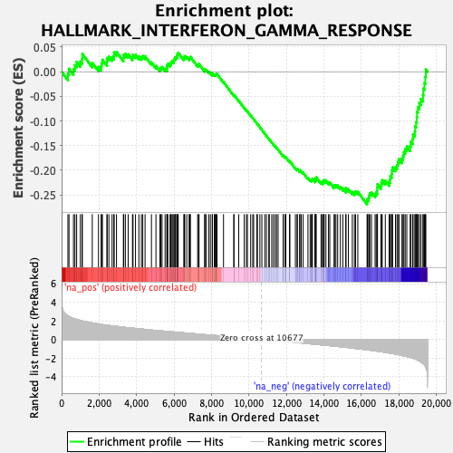
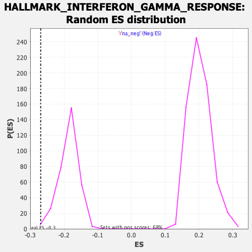

| | | Dataset | CK_basal |
| Phenotype | NoPhenotypeAvailable |
| Upregulated in class | na_neg |
| GeneSet | HALLMARK_INTERFERON_GAMMA_RESPONSE |
| Enrichment Score (ES) | -0.26927146 |
| Normalized Enrichment Score (NES) | -1.450549 |
| Nominal p-value | 0.012345679 |
| FDR q-value | 0.039284073 |
| FWER p-Value | 0.237 |
Table: GSEA Results Summary

Fig 1: Enrichment plot: HALLMARK_INTERFERON_GAMMA_RESPONSE
Profile of the Running ES Score & Positions of GeneSet Members on the Rank Ordered List
| SYMBOL | RANK IN GENE LIST | RANK METRIC SCORE | RUNNING ES | CORE ENRICHMENT | | 1 | ISOC1 | 337 | 2.530 | -0.0041 | No |
| 2 | STAT4 | 395 | 2.468 | 0.0060 | No |
| 3 | BPGM | 634 | 2.255 | 0.0056 | No |
| 4 | OAS3 | 711 | 2.206 | 0.0133 | No |
| 5 | SLAMF7 | 803 | 2.155 | 0.0199 | No |
| 6 | CCL7 | 999 | 2.037 | 0.0206 | No |
| 7 | CASP7 | 1092 | 1.992 | 0.0263 | No |
| 8 | HELZ2 | 1106 | 1.986 | 0.0361 | No |
| 9 | METTL7B | 1636 | 1.765 | 0.0181 | No |
| 10 | IL2RB | 1969 | 1.657 | 0.0097 | No |
| 11 | TNFAIP6 | 2110 | 1.614 | 0.0109 | No |
| 12 | XCL1 | 2134 | 1.604 | 0.0182 | No |
| 13 | IRF7 | 2179 | 1.591 | 0.0243 | No |
| 14 | RIPK2 | 2424 | 1.528 | 0.0198 | No |
| 15 | CD38 | 2426 | 1.527 | 0.0278 | No |
| 16 | BATF2 | 2523 | 1.499 | 0.0307 | No |
| 17 | FCGR1A | 2694 | 1.454 | 0.0296 | No |
| 18 | SOCS1 | 2792 | 1.430 | 0.0321 | No |
| 19 | PDE4B | 2800 | 1.428 | 0.0393 | No |
| 20 | SPPL2A | 2930 | 1.397 | 0.0400 | No |
| 21 | IL10RA | 3296 | 1.312 | 0.0280 | No |
| 22 | LY6E | 3317 | 1.308 | 0.0339 | No |
| 23 | PFKP | 3402 | 1.289 | 0.0363 | No |
| 24 | PSMB9 | 3552 | 1.260 | 0.0353 | No |
| 25 | PTPN2 | 3781 | 1.208 | 0.0298 | No |
| 26 | IDO1 | 3812 | 1.203 | 0.0346 | No |
| 27 | SECTM1 | 3944 | 1.180 | 0.0341 | No |
| 28 | EIF4E3 | 4123 | 1.146 | 0.0309 | No |
| 29 | OASL | 4257 | 1.116 | 0.0299 | No |
| 30 | LYSMD2 | 4330 | 1.101 | 0.0320 | No |
| 31 | FAS | 4453 | 1.080 | 0.0314 | No |
| 32 | CMKLR1 | 4794 | 1.004 | 0.0191 | No |
| 33 | IRF4 | 5035 | 0.962 | 0.0118 | No |
| 34 | NOD1 | 5244 | 0.925 | 0.0059 | No |
| 35 | MX2 | 5297 | 0.916 | 0.0080 | No |
| 36 | FPR1 | 5361 | 0.905 | 0.0095 | No |
| 37 | ZNFX1 | 5522 | 0.877 | 0.0059 | No |
| 38 | TRIM21 | 5618 | 0.860 | 0.0055 | No |
| 39 | TRIM14 | 5625 | 0.860 | 0.0097 | No |
| 40 | LCP2 | 5636 | 0.858 | 0.0137 | No |
| 41 | SP110 | 5668 | 0.852 | 0.0166 | No |
| 42 | TNFAIP2 | 5787 | 0.832 | 0.0149 | No |
| 43 | USP18 | 5832 | 0.825 | 0.0170 | No |
| 44 | DHX58 | 5853 | 0.821 | 0.0203 | No |
| 45 | PIM1 | 5911 | 0.809 | 0.0216 | No |
| 46 | CSF2RB | 5992 | 0.797 | 0.0217 | No |
| 47 | RSAD2 | 6000 | 0.795 | 0.0255 | No |
| 48 | CMTR1 | 6054 | 0.782 | 0.0269 | No |
| 49 | ARL4A | 6081 | 0.778 | 0.0297 | No |
| 50 | CD69 | 6149 | 0.766 | 0.0302 | No |
| 51 | UPP1 | 6156 | 0.765 | 0.0340 | No |
| 52 | SERPING1 | 6196 | 0.757 | 0.0359 | No |
| 53 | CFB | 6224 | 0.753 | 0.0385 | No |
| 54 | PTPN6 | 6521 | 0.703 | 0.0269 | No |
| 55 | XAF1 | 6551 | 0.697 | 0.0291 | No |
| 56 | CIITA | 6574 | 0.693 | 0.0316 | No |
| 57 | SOCS3 | 6682 | 0.675 | 0.0296 | No |
| 58 | TAPBP | 6804 | 0.656 | 0.0268 | No |
| 59 | ZBP1 | 6841 | 0.651 | 0.0284 | No |
| 60 | IFIH1 | 6874 | 0.644 | 0.0301 | No |
| 61 | VAMP8 | 7259 | 0.576 | 0.0133 | No |
| 62 | NCOA3 | 7308 | 0.569 | 0.0138 | No |
| 63 | PSMB10 | 7335 | 0.563 | 0.0155 | No |
| 64 | IFNAR2 | 7633 | 0.512 | 0.0028 | No |
| 65 | CASP1 | 7642 | 0.510 | 0.0051 | No |
| 66 | IRF5 | 7717 | 0.499 | 0.0039 | No |
| 67 | STAT2 | 7849 | 0.476 | -0.0004 | No |
| 68 | TRIM26 | 7937 | 0.463 | -0.0024 | No |
| 69 | TNFSF10 | 8041 | 0.445 | -0.0054 | No |
| 70 | PLSCR1 | 8043 | 0.445 | -0.0031 | No |
| 71 | CFH | 8146 | 0.429 | -0.0061 | No |
| 72 | LGALS3BP | 8189 | 0.423 | -0.0061 | No |
| 73 | RAPGEF6 | 8226 | 0.417 | -0.0057 | No |
| 74 | ST3GAL5 | 8252 | 0.413 | -0.0049 | No |
| 75 | IL4R | 8292 | 0.405 | -0.0047 | No |
| 76 | SELP | 8640 | 0.346 | -0.0209 | No |
| 77 | CMPK2 | 9189 | 0.251 | -0.0479 | No |
| 78 | LAP3 | 9199 | 0.249 | -0.0470 | No |
| 79 | GCH1 | 9451 | 0.207 | -0.0589 | No |
| 80 | APOL6 | 9745 | 0.161 | -0.0732 | No |
| 81 | IRF9 | 9860 | 0.138 | -0.0784 | No |
| 82 | RNF31 | 9916 | 0.130 | -0.0806 | No |
| 83 | RIPK1 | 10091 | 0.104 | -0.0890 | No |
| 84 | PTGS2 | 10201 | 0.084 | -0.0942 | No |
| 85 | IRF8 | 10248 | 0.075 | -0.0962 | No |
| 86 | SLC25A28 | 10421 | 0.047 | -0.1048 | No |
| 87 | DDX58 | 10449 | 0.043 | -0.1060 | No |
| 88 | PNPT1 | 10581 | 0.018 | -0.1127 | No |
| 89 | CDKN1A | 10687 | -0.002 | -0.1181 | No |
| 90 | IFI27 | 10843 | -0.032 | -0.1259 | No |
| 91 | MYD88 | 10932 | -0.046 | -0.1303 | No |
| 92 | RTP4 | 11058 | -0.067 | -0.1364 | No |
| 93 | CXCL11 | 11084 | -0.071 | -0.1373 | No |
| 94 | IL7 | 11214 | -0.092 | -0.1435 | No |
| 95 | LATS2 | 11304 | -0.109 | -0.1475 | No |
| 96 | CXCL10 | 11398 | -0.126 | -0.1516 | No |
| 97 | PSMB2 | 11471 | -0.139 | -0.1546 | No |
| 98 | JAK2 | 11554 | -0.154 | -0.1581 | No |
| 99 | MTHFD2 | 11826 | -0.198 | -0.1710 | No |
| 100 | DDX60 | 11827 | -0.198 | -0.1700 | No |
| 101 | PLA2G4A | 11932 | -0.218 | -0.1742 | No |
| 102 | BTG1 | 11958 | -0.223 | -0.1743 | No |
| 103 | NMI | 11960 | -0.223 | -0.1732 | No |
| 104 | PSMB8 | 12164 | -0.260 | -0.1824 | No |
| 105 | C1R | 12181 | -0.264 | -0.1818 | No |
| 106 | GZMA | 12477 | -0.320 | -0.1954 | No |
| 107 | RNF213 | 12569 | -0.335 | -0.1983 | No |
| 108 | NUP93 | 12580 | -0.337 | -0.1970 | No |
| 109 | PELI1 | 12704 | -0.359 | -0.2015 | No |
| 110 | CCL5 | 12714 | -0.360 | -0.2001 | No |
| 111 | PSMA2 | 12789 | -0.377 | -0.2019 | No |
| 112 | MX1 | 12890 | -0.394 | -0.2050 | No |
| 113 | PARP12 | 13146 | -0.447 | -0.2158 | No |
| 114 | CCL2 | 13262 | -0.471 | -0.2193 | No |
| 115 | GBP6 | 13332 | -0.485 | -0.2203 | No |
| 116 | MT2A | 13363 | -0.490 | -0.2193 | No |
| 117 | VCAM1 | 13381 | -0.492 | -0.2176 | No |
| 118 | OAS2 | 13510 | -0.515 | -0.2215 | No |
| 119 | ADAR | 13546 | -0.522 | -0.2205 | No |
| 120 | TRIM25 | 13558 | -0.524 | -0.2183 | No |
| 121 | PSMA3 | 13563 | -0.525 | -0.2158 | No |
| 122 | VAMP5 | 13588 | -0.531 | -0.2142 | No |
| 123 | NAMPT | 13845 | -0.584 | -0.2244 | No |
| 124 | ST8SIA4 | 13924 | -0.600 | -0.2252 | No |
| 125 | PARP14 | 13929 | -0.600 | -0.2223 | No |
| 126 | PTPN1 | 14004 | -0.614 | -0.2229 | No |
| 127 | TAP1 | 14007 | -0.614 | -0.2197 | No |
| 128 | NFKB1 | 14106 | -0.632 | -0.2215 | No |
| 129 | EPSTI1 | 14243 | -0.658 | -0.2250 | No |
| 130 | IL15 | 14311 | -0.670 | -0.2250 | No |
| 131 | CXCL9 | 14542 | -0.716 | -0.2331 | No |
| 132 | IFI44 | 14562 | -0.720 | -0.2303 | No |
| 133 | OGFR | 14640 | -0.741 | -0.2303 | No |
| 134 | ITGB7 | 14733 | -0.758 | -0.2311 | No |
| 135 | IL6 | 14877 | -0.785 | -0.2344 | No |
| 136 | CASP3 | 15008 | -0.809 | -0.2368 | No |
| 137 | ISG15 | 15169 | -0.848 | -0.2406 | No |
| 138 | IFIT1 | 15173 | -0.849 | -0.2363 | No |
| 139 | BANK1 | 15306 | -0.878 | -0.2385 | No |
| 140 | ISG20 | 15515 | -0.931 | -0.2443 | No |
| 141 | TXNIP | 15627 | -0.961 | -0.2450 | No |
| 142 | ICAM1 | 15687 | -0.976 | -0.2429 | No |
| 143 | TDRD7 | 15808 | -1.004 | -0.2438 | No |
| 144 | TOR1B | 16301 | -1.116 | -0.2634 | Yes |
| 145 | IRF1 | 16317 | -1.120 | -0.2583 | Yes |
| 146 | CD274 | 16388 | -1.138 | -0.2559 | Yes |
| 147 | IL15RA | 16409 | -1.143 | -0.2509 | Yes |
| 148 | CD86 | 16447 | -1.152 | -0.2467 | Yes |
| 149 | IFIT2 | 16537 | -1.177 | -0.2451 | Yes |
| 150 | HERC6 | 16730 | -1.233 | -0.2485 | Yes |
| 151 | PSME1 | 16788 | -1.248 | -0.2449 | Yes |
| 152 | SSPN | 16842 | -1.263 | -0.2410 | Yes |
| 153 | SAMD9L | 16845 | -1.263 | -0.2344 | Yes |
| 154 | CD40 | 16857 | -1.268 | -0.2283 | Yes |
| 155 | STAT1 | 17041 | -1.325 | -0.2308 | Yes |
| 156 | CASP8 | 17070 | -1.331 | -0.2252 | Yes |
| 157 | IFIT3 | 17109 | -1.339 | -0.2201 | Yes |
| 158 | GPR18 | 17274 | -1.389 | -0.2213 | Yes |
| 159 | IL18BP | 17477 | -1.456 | -0.2240 | Yes |
| 160 | CASP4 | 17524 | -1.471 | -0.2187 | Yes |
| 161 | NFKBIA | 17541 | -1.476 | -0.2117 | Yes |
| 162 | STAT3 | 17611 | -1.498 | -0.2074 | Yes |
| 163 | SOD2 | 17625 | -1.504 | -0.2001 | Yes |
| 164 | IFI44L | 17663 | -1.517 | -0.1940 | Yes |
| 165 | EIF2AK2 | 17818 | -1.576 | -0.1937 | Yes |
| 166 | ARID5B | 17898 | -1.607 | -0.1893 | Yes |
| 167 | IFI35 | 17944 | -1.630 | -0.1830 | Yes |
| 168 | PNP | 18005 | -1.657 | -0.1774 | Yes |
| 169 | SAMHD1 | 18164 | -1.727 | -0.1764 | Yes |
| 170 | TNFAIP3 | 18220 | -1.753 | -0.1700 | Yes |
| 171 | GBP4 | 18267 | -1.768 | -0.1631 | Yes |
| 172 | IRF2 | 18334 | -1.797 | -0.1570 | Yes |
| 173 | C1S | 18421 | -1.839 | -0.1518 | Yes |
| 174 | TRAFD1 | 18603 | -1.934 | -0.1509 | Yes |
| 175 | PML | 18629 | -1.954 | -0.1419 | Yes |
| 176 | BST2 | 18729 | -2.011 | -0.1364 | Yes |
| 177 | FGL2 | 18756 | -2.024 | -0.1271 | Yes |
| 178 | AUTS2 | 18854 | -2.098 | -0.1211 | Yes |
| 179 | UBE2L6 | 18867 | -2.107 | -0.1106 | Yes |
| 180 | P2RY14 | 18921 | -2.151 | -0.1020 | Yes |
| 181 | IFITM3 | 18953 | -2.176 | -0.0921 | Yes |
| 182 | RBCK1 | 18969 | -2.192 | -0.0813 | Yes |
| 183 | IFITM2 | 19015 | -2.236 | -0.0718 | Yes |
| 184 | PSME2 | 19093 | -2.317 | -0.0636 | Yes |
| 185 | SRI | 19178 | -2.419 | -0.0552 | Yes |
| 186 | HIF1A | 19284 | -2.581 | -0.0470 | Yes |
| 187 | NLRC5 | 19303 | -2.616 | -0.0341 | Yes |
| 188 | CD74 | 19366 | -2.746 | -0.0229 | Yes |
| 189 | B2M | 19411 | -2.866 | -0.0100 | Yes |
| 190 | MVP | 19437 | -2.998 | 0.0045 | Yes |
Table: GSEA details [plain text format]

Fig 2: HALLMARK_INTERFERON_GAMMA_RESPONSE: Random ES distribution
Gene set null distribution of ES for HALLMARK_INTERFERON_GAMMA_RESPONSE